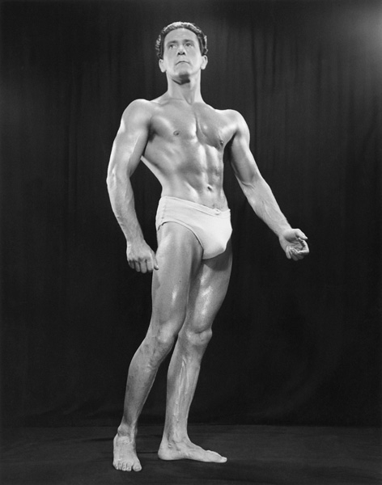
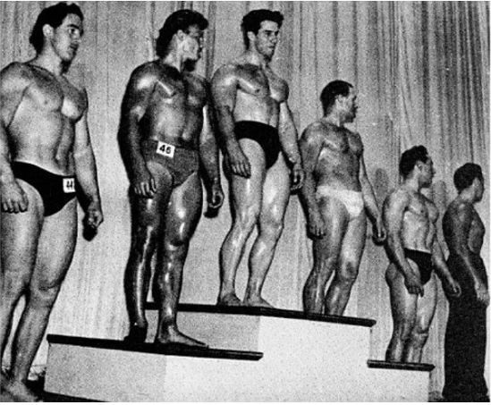
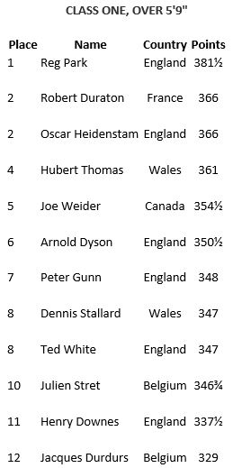

Most people remember the 1951 NABBA Mr. Universe contest for one reason: Reg Park won it at 23 years old and would go on to dominate the bodybuilding scene of the 1950s and most of the 1960s. What is often lost in the history of this contest is that one of Park’s competitors was none other than the “Master Blaster” himself, Joe Weider. At the time Weider was busy creating a burgeoning bodybuilding empire that included Your Physique magazine, mail order courses, supplements, weight sets, and promoting bodybuilding contests through the IFBB. Why would Weider decide to compete in the most prestigious bodybuilding competition in the World at this time?
Bob Hoffman (founder of York Barbell and Strength & Health magazine) and Joe Weider had been using their magazines for years to lob insults at each other. They frequently ridiculed each other’s physiques, training methods, morals, and patriotism. Finally, Weider had enough and issued a challenge to Hoffman directly. He stated: “Most bodybuilders and weightlifters had the impression that physical culture was foreign to my nature. They had been told I was fat, that I never lifted weights, in fact I had never even touched a barbell, I was only in the game for what I could get out of it, and all I was concerned with was making money. If you are an enthusiastic bodybuilder...as I am...and if you watch your diet and train hard...as I do, you naturally get more than a little annoyed to have to bear the brunt of such ill-considered remarks. At first you try and brush them off, like bothersome insects. But before long, the irritation becomes too great to suffer and you do as I did...I challenged the man (Hoffman) who was belittling me, to a contest. His reply made it obvious that he would never enter a contest against me, and I had to seek some other way of showing all the bodybuilders that I was in good shape and practiced what I was constantly preaching.”
Despite Hoffman electing not to accept the challenge, Weider decided he wanted to compete to prove he was not interested in bodybuilding solely for the money. Hoffman controlled the AAU’s bodybuilding events at this time, so Weider could not enter an AAU contest and expect to be judged fairly, nor could he enter an IFBB event without suspicion as this was his own organization. He decided to enter the NABBA Mr. Universe contest as it was regarded as a contest that was judged fairly where politics would not get in the way. It was also the most prestigious bodybuilding contest at the time with competitors coming from around the World to compete.

We know very little about Weider’s preparation for the contest except his own admission that in the month leading up to it he was not able to train much at all due to running his bodybuilding business. He was hopeful he could get a few workouts in on the ship that brought him to London, but he reported that the voyage was so rough that he was not able to train due to sea sickness and could not sleep at night. He arrived in London with five days before the contest and was able to get in two workouts at a friend’s house but noticed his strength had dropped precipitously. He noted on the bench press he was only able to lift 235 for ten reps when he was usually able to handle 265-275.
The day of the contest arrived and Weider, though ill-prepared, was ready to compete. According to the prolific bodybuilding writer Charles A. Smith, the audience greeted Weider with “a loud burst of applause and hand clapping” and they “appreciated a sportsman and one who wasn’t adverse to taking his own medicine”. Smith also noted that “All around me I heard people expressing great surprise at his development”.
Ability was one of the three criteria for judging and Weider was the only one to demonstrate his through weightlifting. According to Smith, “For his ability test, Weider pressed 200 - had a bit of a struggle at first because of the greasy bar and hands and lack of chalk -- then he did several squats and some jerks from behind neck with the 200 pounds.” On a lighter note, at some point during the contest Weider ended up posing in his pants. He explained the situation as follows, “In one picture I’m lined up with other contestants wearing their trunks, but I’m in my suit pants and street shoes. I was half-dressed because I thought I was done onstage and went back to change, but then somebody ran back and told me I had to go out again.”
When the final scores were recorded, Weider had come in fifth place out of twelve competitors in the tall class of the contest. He tallied 354 ½ points out of a total of 406. There were seven judges that could award a total of 58 points each (Up to 20 points for presentation of physique, 20 points for posing of physique, and 18 points for ability). The complete judging of the tall class is recorded below:

Weider appeared to be happy with his placement and the event overall. He wrote: “I hardly expected to place where I did. There were so many fine men in my division...Arnold Dyson, Hubert Thomas, and of course Mr. Universe himself, Reg Park, that I had already put myself at the bottom of the list before the contest took place. What I want to make clear is that I entered the Mr. Universe contest not to see how high I would place, but to let an impartial audience judge for themselves that not only could I teach, but I could also DO, that I didn't intend to hide behind the pages of a magazine, and I wasn't afraid to show myself. I believe that the game itself is more important than winning for the sake of winning. It isn't enough to win or place. The most important thing is that you COMPETE and do so as a sportsman”.
Joe Weider did not compete thinking he would defeat Reg Park, or even place highly in the 1951 NABBA Mr. Universe contest but intended to show the bodybuilding community that he truly loved bodybuilding and followed its lifestyle like they did. He more than accomplish this goal by coming in fifth in the tall class against the World’s best. Perhaps his nickname of the “Master Blaster” was well deserved.